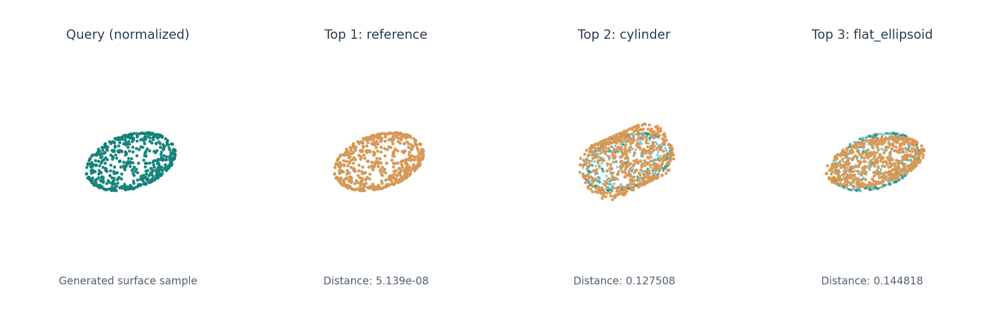

pointCloud_Demo: ICP-Based Point Cloud Matching for 3D Geometry Retrieval
Paper
Video
Code
Abstract
本项目展示一种基于表面点云的三维几何检索流程。输入 STL 三角网格后，按三角形面积生成采样点，统一模型的位置与尺度，以 PCA 建立初始主方向，再使用多起点 ICP 完成刚性配准。最终通过对齐后的双向平均最近点距离，衡量查询模型与候选模型的表面差异，并按距离从小到大排序。
该演示使用 CPU 计算，无需训练模型。附带的小型几何样例由程序生成，用于展示预处理、配准和排序过程。
Introduction
STL 网格→表面采样→归一化与 PCA→ICP 配准→距离排序
面积加权的表面中心和 RMS 半径用于归一化，减少网格细分密度的影响，同时忽略绝对平移和同比例缩放。PCA 提供主轴坐标；从 24 个合法轴向旋转中选择多个初始位置，以双向最近点匹配和 SVD 刚性更新迭代求解 ICP。
d(A, B) = ½ [ μA→B + μB→A ]
其中 μ 为一个点集到另一点集的平均最近欧氏距离。距离使用未平方的数值，单位为归一化 RMS 半径；数值越小表示表面点集越接近，分数不代表相似度百分比。
Results
示例查询由参考表面经过旋转、平移及 1.7 倍缩放生成，并与参考表面、圆柱和扁椭球三个候选比较。每个模型采样 2048 点，ICP 使用 6 个初始位置，每个位置最多迭代 35 轮。

| 排名 | 候选模型 | 双向平均最近点距离 |
|---|---|---|
| 1 | reference | 5.14 × 10−8 |
| 2 | cylinder | 0.127508 |
| 3 | flat_ellipsoid | 0.144818 |
样例中的对应关系是已知的，只用于检查计算流程，不代表真实检索准确率。有限起点的 ICP 可能陷入局部最优，对称结构、采样点数及随机采样也可能影响结果。
Usage
下载算法仓库，在仓库根目录安装依赖并运行示例。环境、参数和输入输出说明见 pointCloud_Demo README。
python -m pip install -r geometry_retrieval/requirements.txt
python geometry_retrieval/compare_geometry.py结果保存为 output/ranking.csv 和 output/results.json。使用自己的 STL 时，同时传入 --gallery 和 --query 参数。